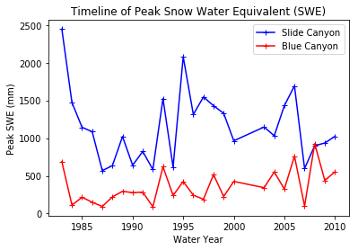
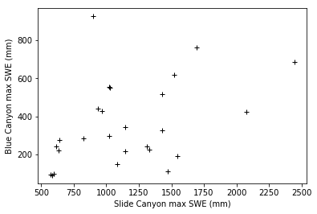
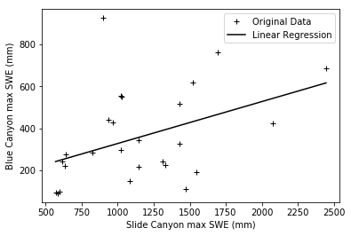
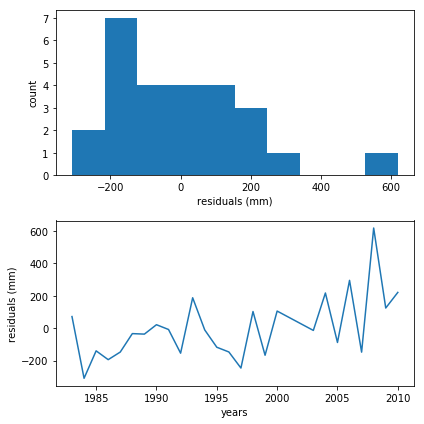
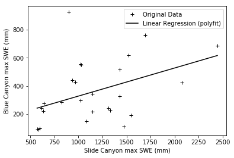
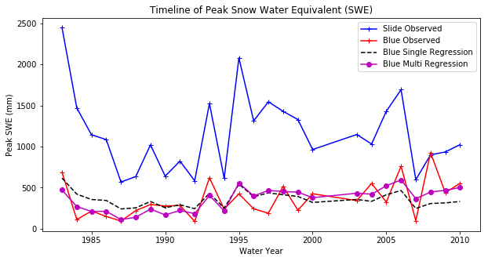
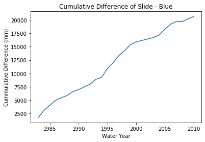

Lab 3.2 Multiple Linear Regression#
import numpy as np
import scipy.stats as st
import pandas as pd
import scipy.io as sio
import scipy.stats as st
import matplotlib.pyplot as plt
%matplotlib inline
Load data.#
Make sure that you’ve put the file in your working directory.
# Read in a .csv file
data = pd.read_csv('pillows_example.csv')
data.tail()
---------------------------------------------------------------------------
FileNotFoundError Traceback (most recent call last)
/tmp/ipykernel_2321/1235208434.py in <module>
1 # Read in a .csv file
----> 2 data = pd.read_csv('pillows_example.csv')
3 data.tail()
/opt/hostedtoolcache/Python/3.7.17/x64/lib/python3.7/site-packages/pandas/util/_decorators.py in wrapper(*args, **kwargs)
309 stacklevel=stacklevel,
310 )
--> 311 return func(*args, **kwargs)
312
313 return wrapper
/opt/hostedtoolcache/Python/3.7.17/x64/lib/python3.7/site-packages/pandas/io/parsers/readers.py in read_csv(filepath_or_buffer, sep, delimiter, header, names, index_col, usecols, squeeze, prefix, mangle_dupe_cols, dtype, engine, converters, true_values, false_values, skipinitialspace, skiprows, skipfooter, nrows, na_values, keep_default_na, na_filter, verbose, skip_blank_lines, parse_dates, infer_datetime_format, keep_date_col, date_parser, dayfirst, cache_dates, iterator, chunksize, compression, thousands, decimal, lineterminator, quotechar, quoting, doublequote, escapechar, comment, encoding, encoding_errors, dialect, error_bad_lines, warn_bad_lines, on_bad_lines, delim_whitespace, low_memory, memory_map, float_precision, storage_options)
584 kwds.update(kwds_defaults)
585
--> 586 return _read(filepath_or_buffer, kwds)
587
588
/opt/hostedtoolcache/Python/3.7.17/x64/lib/python3.7/site-packages/pandas/io/parsers/readers.py in _read(filepath_or_buffer, kwds)
480
481 # Create the parser.
--> 482 parser = TextFileReader(filepath_or_buffer, **kwds)
483
484 if chunksize or iterator:
/opt/hostedtoolcache/Python/3.7.17/x64/lib/python3.7/site-packages/pandas/io/parsers/readers.py in __init__(self, f, engine, **kwds)
809 self.options["has_index_names"] = kwds["has_index_names"]
810
--> 811 self._engine = self._make_engine(self.engine)
812
813 def close(self):
/opt/hostedtoolcache/Python/3.7.17/x64/lib/python3.7/site-packages/pandas/io/parsers/readers.py in _make_engine(self, engine)
1038 )
1039 # error: Too many arguments for "ParserBase"
-> 1040 return mapping[engine](self.f, **self.options) # type: ignore[call-arg]
1041
1042 def _failover_to_python(self):
/opt/hostedtoolcache/Python/3.7.17/x64/lib/python3.7/site-packages/pandas/io/parsers/c_parser_wrapper.py in __init__(self, src, **kwds)
49
50 # open handles
---> 51 self._open_handles(src, kwds)
52 assert self.handles is not None
53
/opt/hostedtoolcache/Python/3.7.17/x64/lib/python3.7/site-packages/pandas/io/parsers/base_parser.py in _open_handles(self, src, kwds)
227 memory_map=kwds.get("memory_map", False),
228 storage_options=kwds.get("storage_options", None),
--> 229 errors=kwds.get("encoding_errors", "strict"),
230 )
231
/opt/hostedtoolcache/Python/3.7.17/x64/lib/python3.7/site-packages/pandas/io/common.py in get_handle(path_or_buf, mode, encoding, compression, memory_map, is_text, errors, storage_options)
705 encoding=ioargs.encoding,
706 errors=errors,
--> 707 newline="",
708 )
709 else:
FileNotFoundError: [Errno 2] No such file or directory: 'pillows_example.csv'
Remember, it’s always good to plot your data first. Create figures.#
plt.plot(data['years'],data['SLI_max'],'b-+', label='Slide Canyon');
plt.plot(data['years'],data['BLC_max'],'r-+', label='Blue Canyon');
plt.title('Timeline of Peak Snow Water Equivalent (SWE)')
plt.xlabel('Water Year')
plt.ylabel('Peak SWE (mm)');
plt.legend(loc="best")
<matplotlib.legend.Legend at 0x11c275c50>

What does the above plot show?#
What you see above is a plot of the maximum value of snow water equivalent (SWE) measured at two snow pillows (these weigh the snow and convert that weight into the water content of the snow). These measurements of snow are not too far from each other geographically (both in the Sierra Nevada, California, although Slide Canyon is at a higher elevation and further south), and we might expect that more snow at one site woud correspond to more snow at the other site as well. We can check this by examining a regression between the data at the two sites.
The first step to any regression or correlation analysis is to create a scatter plot of the data.#
plt.plot(data['SLI_max'],data['BLC_max'],'k+');
plt.xlabel('Slide Canyon max SWE (mm)')
plt.ylabel('Blue Canyon max SWE (mm)');

Linear regression#
The plot above suggests that this is a borderline case for applying linear regression analysis. What rules of linear regression might we worry about here? Take a look at your lecture notes.
We will proceed with calculating the regression and then look at the residuals to get a better idea of whether this is the best approach.
n = data['SLI_max'].size;
B1 = (n* np.sum(data['BLC_max']*data['SLI_max']) - np.sum(data['BLC_max'])*np.sum(data['SLI_max']))/(n* np.sum(data['SLI_max']**2) - (np.sum(data['SLI_max']))**2);
B0 = np.mean(data['BLC_max']) - B1*np.mean(data['SLI_max']);
x = np.linspace(np.min(data['SLI_max']), np.max(data['SLI_max']),n)
y = B0 + B1*x
plt.plot(data['SLI_max'],data['BLC_max'],'k+',label='Original Data');
plt.xlabel('Slide Canyon max SWE (mm)')
plt.ylabel('Blue Canyon max SWE (mm)')
plt.plot(x,y,'k-',label='Linear Regression');
plt.legend()
<matplotlib.legend.Legend at 0x11c41dbe0>

Calculate the residuals of this linear regression fit#
resid = data['BLC_max'] - (B0 + B1*(data['SLI_max']));
Now, what do we need to be examining regarding the residuals?#
From the lecture notes:
Data should not be strongly auto correlated (more on this next week),
There shouldn’t be any dramatic expansion in the variance over time.
A linear model should fit reasonably well (use a scatter plot to confirm)
The residuals for the linear model should be approximately normally distributed
The residuals shouldn’t have large trends in them (plot these to get a sense of whether there are problems).
For now, don’t worry about auto-correlation. We made a scatter plot above, so now we should plot to see a) if the residuals look approximately normally distributed, and b) if the residuals have a trend in them.#
f, (ax1, ax2) = plt.subplots(2,1,figsize=(6,6))
ax1.hist(resid)
ax1.set_xlabel('residuals (mm)')
ax1.set_ylabel('count')
ax2.plot(data['years'],resid)
ax2.set_xlabel('years')
ax2.set_ylabel('residuals (mm)')
f.tight_layout()

Looking at these plots, what do you think? Is our linear regression okay?#
When I look at the plot above, I think that with the exception of one outlier point at 600, the residuals do look approximately normally distributed. (I’m personally inclined to ignore the outlier because I work with snow pillow data a lot and know that they break periodically. You have to make a judgement call about your own data.)
I also see that the residuals look like they might have a trend in time, so I want to test for the significance of this trend.
To test for the significance of the trend:#
Test for positive slope
Is there a significant positive relationship between snow depth at SLI and BLC?
## Test for positive slope
SSE = np.sum((B0 + B1*data['SLI_max'] - data['BLC_max'])**2);
standard_err = np.sqrt(SSE/(n - 2));
s_B1 = np.sqrt(standard_err**2 / (np.sum((data['SLI_max'] - np.mean(data['SLI_max']))**2)));
t_95_24 = 1.711;
t = B1/s_B1;
print(t)
2.29962841817
So, with 95% confidence, there is a trend to this data, and we ought to consider it as part of our regression analysis.
Before moving on, let’s demonstrate another way you could do simple linear regression.#
You can instead use a numpy function to perform the same linear regression that you did manually
# Read the documentation
np.polyfit?
Bv2 = np.polyfit(data['SLI_max'],data['BLC_max'],1)
print(Bv2)
x = np.linspace(np.min(data['SLI_max']), np.max(data['SLI_max']),n)
y = Bv2[1] + Bv2[0]*x
[ 0.1996806 127.91431327]
Note that we output just the polynomial coefficients here. When you look at the documentation, you can tell that you could also output other things, like the residuals, using this function.
plt.plot(data['SLI_max'],data['BLC_max'],'k+',label='Original Data');
plt.xlabel('Slide Canyon max SWE (mm)')
plt.ylabel('Blue Canyon max SWE (mm)')
plt.plot(x,y,'k-',label='Linear Regression (polyfit)');
plt.legend()
<matplotlib.legend.Legend at 0x11c881b00>

Again, this is not a great fit, but we have reason to suspect that the trend in the data might explain part of the problem. More on that in a bit.
Let’s check the correlation coefficient for our two snow measurements#
Note that numpy.corrcoef only gives you the R values, not P
This gives a matrix of results. These are correlation of x with itself (should be 1), of x with y, of y with x, and of y with itself (should be 1)
# Read the documentation
np.corrcoef?
Sxy = np.sum((data['SLI_max']-np.mean(data['SLI_max']))*(data['BLC_max']-np.mean(data['BLC_max'])));
r = Sxy / (np.sqrt(np.sum((data['SLI_max']-np.mean(data['SLI_max']))**2)) * np.sqrt(np.sum((data['BLC_max']-np.mean(data['BLC_max']))**2)));
# np.corrcoef only gives you the R values, not P
R = np.corrcoef(data['SLI_max'],data['BLC_max']);
print(R)
[[ 1. 0.4249234]
[ 0.4249234 1. ]]
The correlation above doesn’t look particularly high, particularly if you square it (which is an indicator of “the variance explained”). How do we know if this correlation is statistically significant?#
Another function: scipy.stats.pearsonr will give us a single R and P value
P gives you the corresponding p-values to determine the significance of the correlation
# Read the documentation
st.pearsonr?
R, P = st.pearsonr(data['SLI_max'],data['BLC_max'])
print(R)
print(R*R)
print(P)
0.424923404562
0.180559899744
0.0304739230437
This is telling us that while our correlation isn’t particularly strong, it is significant at the 95% confidence interval. (Note also that it would not be significant at the 99% confidence interval.)
Now we return to our observation that our data had a temporal trend by applying Multiple Linear Regression#
Our baseline assumption now is that because we found a trend in the residuals, we might be better off by forming a regression model that is a function of both maximum annual SWE at Slide Canyon and of the year.
from scipy.linalg import lstsq
# Read the documentation
lstsq?
Note that the documentation states that the lstsq function requires input of an array that includes vectors of all of the predictor variables we are considering. Below, we create an array made up of the maximum annual SWE at Slide Canyon and the year. We also need an array of ones (which allows for a constant term in the regression).
Xmulti = np.array([ data['SLI_max'],
np.linspace(1,data['years'].size,data['years'].size),
np.ones_like(data['years'])]).T
print(Xmulti.shape)
print(data['BLC_max'].shape)
# These print statements tell us the dimensions of this array
---------------------------------------------------------------------------
NameError Traceback (most recent call last)
<ipython-input-1-b7a62184ac68> in <module>
----> 1 Xmulti = np.array([ data['SLI_max'],
2 np.linspace(1,data['years'].size,data['years'].size),
3 np.ones_like(data['years'])]).T
4 print(Xmulti.shape)
5 print(data['BLC_max'].shape)
NameError: name 'np' is not defined
B, res, rnk, s = lstsq(Xmulti, data['BLC_max'])
print(B)
[ 0.22156219 13.77959269 -83.33208798]
The values of B, above, show the coefficients we would assing to the Slide Canyon SWE, the year, and the constant offset, in the order shown.
Now, we want to compare our single regression model with our multi-regression model. Did it make a difference?#
Plot the results from the two different regression methods.
Note that you will need to use the function np.dot() to multiply the coefficients from the muli-linear regression model with the data
# Read the documentation
np.dot?
# Original data:
plt.figure(figsize=(10,5))
plt.plot(data['years'],data['SLI_max'],'b-+', label='Slide Observed');
plt.plot(data['years'],data['BLC_max'],'r-+', label='Blue Observed');
# Predicted with linear regression between Slide Canyon and Blue Canyon SWE
plt.plot(data['years'],B0 + B1*data['SLI_max'],'k--', label='Blue Single Regression')
plt.plot(data['years'],Xmulti.dot(B),'m-o', label='Blue Multi Regression')
plt.legend()
plt.title('Timeline of Peak Snow Water Equivalent (SWE)')
plt.xlabel('Water Year')
plt.ylabel('Peak SWE (mm)');

Note that you could calculate the residuals of both models. Generally, adding more predictors will always decrease the residual error in the region where the model is developed but may increase the error in a region outside of when it was developed. To test this, it’s best practice to keep some data separate from the regression model development and then test model performance there. You could take a subset of the data above, recalcuate the regression coefficients and then check your model prediction vs. observed for years outside of your original dataset to see if the mulitple regression actually improves your predictive capabilities.
Checking for station discontinuities#
As discussed in lecture, one way to check for changes in long-term weather stations (e.g., did the station move? did someone build a house next to my precip gauge) is to make a cumulative difference plot. Because we noticed a trend in our residuals we might assume that something happened (such as a station moved, or a tree grew over the sensor). We are looking for sudden, abrupt changes in the slope (or the relationship) between the two sets of observations in time.
Cumulative Difference Plot#
f, ax = plt.subplots(1)
ax.plot(data['years'], np.cumsum(data['SLI_max'] - data['BLC_max']))
ax.set_title('Cumulative Difference of Slide - Blue')
ax.set_ylabel('Cummulative Difference (mm)')
ax.set_xlabel('Water Year');

From the above plot, it looks like maybe something happened in 1995, 1999, 2005, and 2009 (note these are points where the slope changes), but these are relatively subtle and do not indicate a clear point of shift. (So we could have slow-growing vegetation near one of the sensors, but we likely don’t have a sudden station location change or observer change.)